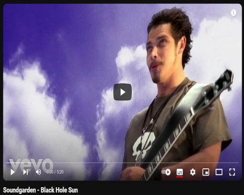

Soundgarden foi uma banda de rock norte-americana formada em 1984, em Seattle, Washington e que, ao lado de Nirvana, Alice in Chains e Pearl Jam, constituiu-se como um dos principais representantes do movimento grunge, incorporando, no entanto, uma maior variedade musical que as restantes bandas. Soundgarden exibe uma componente mais pesada, principalmente na primeira metade da sua carreira, sendo muitas vezes considerada uma banda de heavy metal, o que os diferencia de outras de sua época e origem como Nirvana e Pearl Jam. Pioneiros do movimento que viria a ser conhecido como grunge, o Soundgarden foi influência para muitos de seus contemporâneos, incluindo Alice in Chains e Tad. Foram a primeira banda a assinar com uma grande editora, a A&M, sendo muitas vezes apontada como a banda que abriu as portas para que grandes selos assinassem com as bandas de Seattle. No entanto, só atingiu sucesso comercial no começo dos anos 1990, devido à popularização do estilo.
O Soundgarden vendeu mais de 30 milhões de cópias pelo mundo. A banda atingiu o mainstream com o seu terceiro álbum de estúdio, Badmotorfinger, lançado em 1991. os álbuns seguintes, Superunknown e Down on the Upside, estrearam na primeira e segunda posição da Billboard, respectivamente. O Soundgarden também ganhou Grammys pelas canções "Black Hole Sun" e "Spoonman". O grupo foi colocado como 14º na lista dos 100 Maiores Artistas do Hard Rock, da VH1. Ainda no auge, terminaram em 9 de abril de 1997 devido a brigas internas pela direção criativa da banda, e lançaram uma compilação intitulada A-Sides, como último registro oficial até então. No início de 2010 a banda volta a ativa, participam do festival Lollapalooza e no mesmo ano lançam uma nova compilação, intitulada "Telephantasm", nome de uma música de 1987, presente no disco, que nunca havia sido lançada antes. Outra faixa antiga da banda, datada de 1991, que não havia sido lançada antes, e que ganhou uma regravação foi "Black Rain", que foi lançada como single para promover o álbum, colocando o Soundgarden nas paradas de sucesso novamente. A banda lança um novo álbum, King Animal, em 2012. Em 2017, Chris Cornell é encontrado morto num banheiro de hotel, tendo cometido suicídio por enforcamento, colocando um fim ao Soundgarden.
Clique na imagem abaixo para assitir a playlist de clipes do Soundgarden no Youtube.
